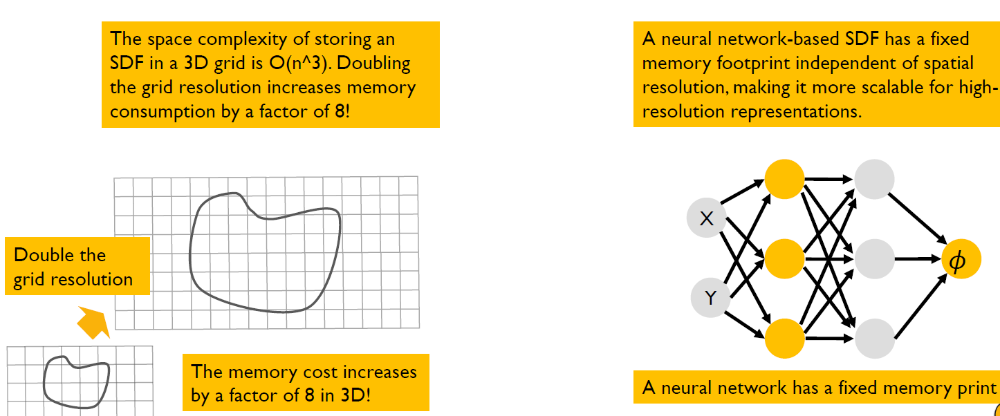
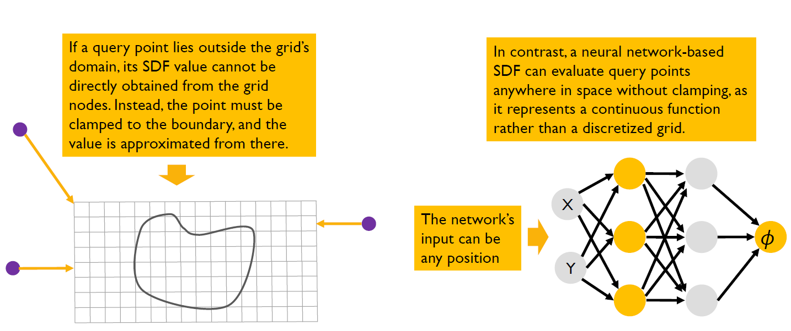
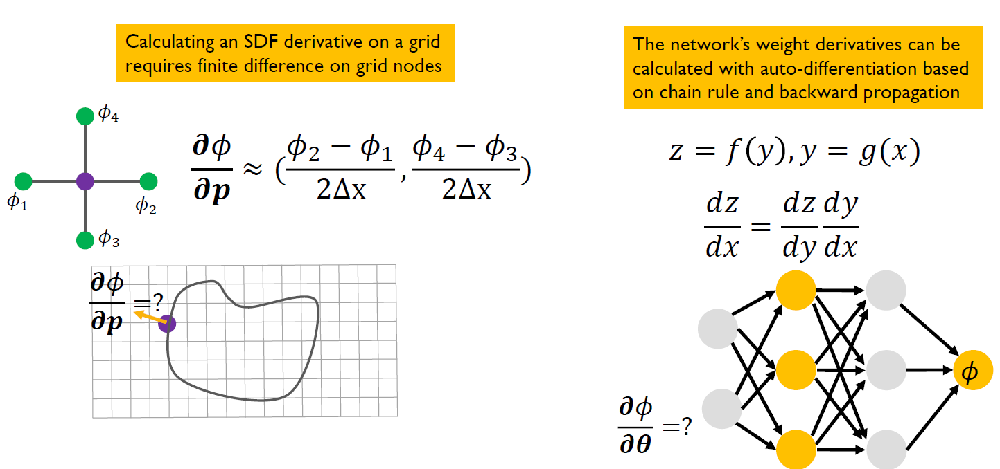
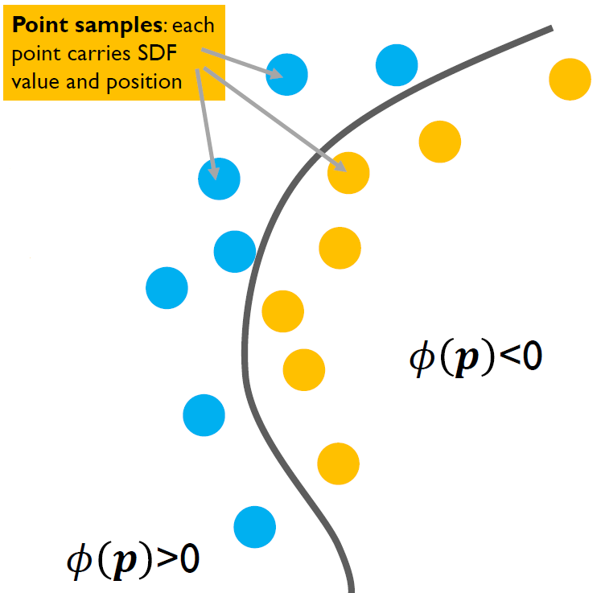
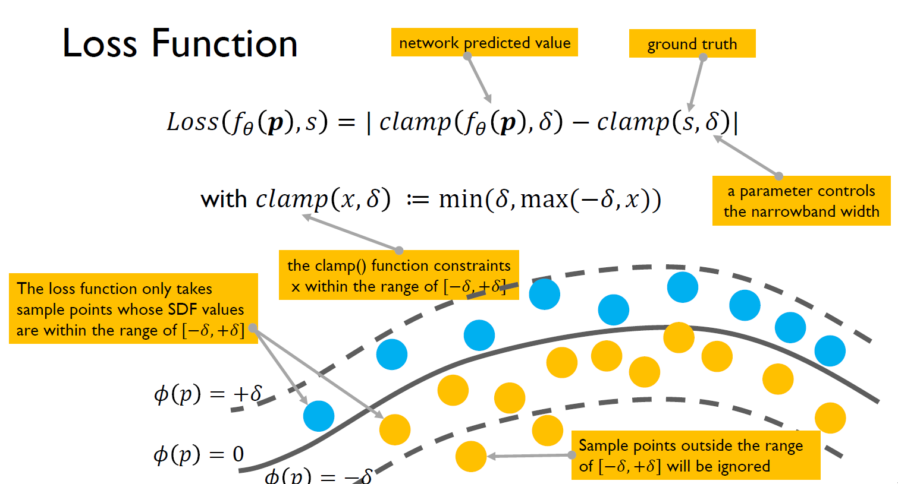
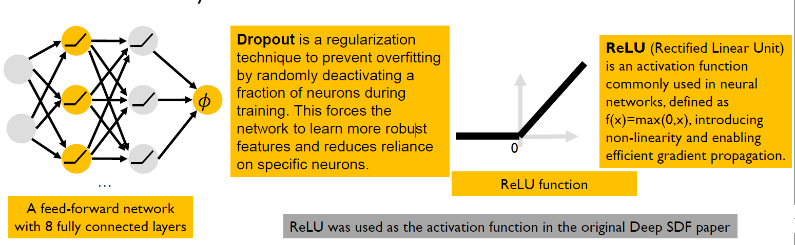
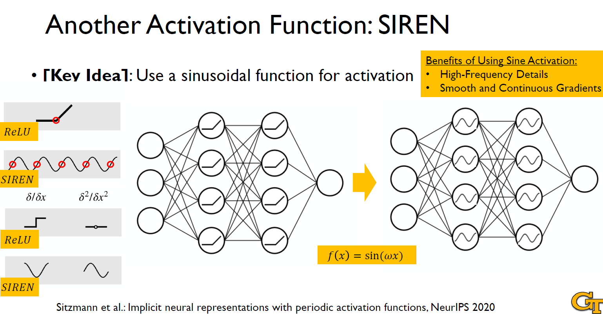
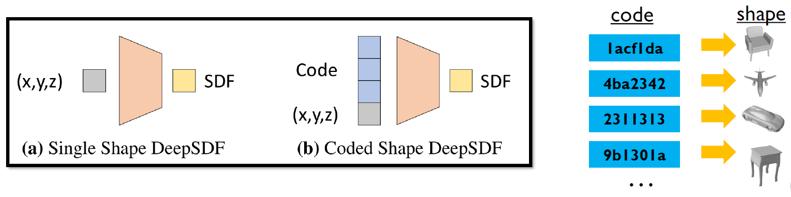
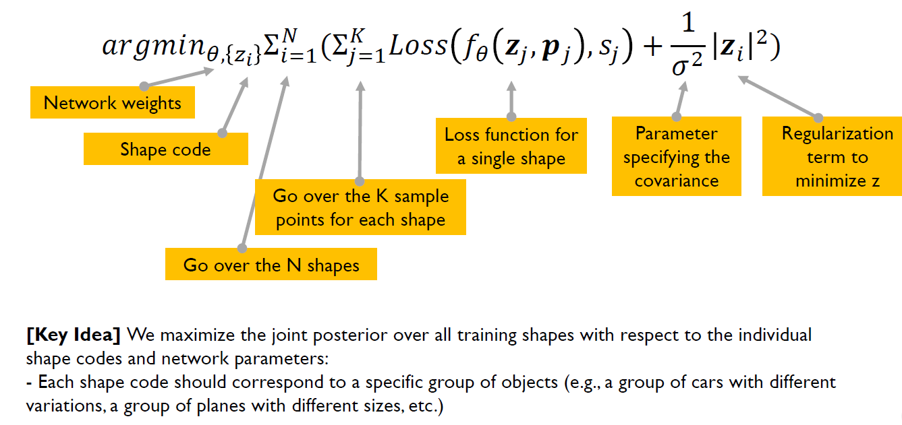
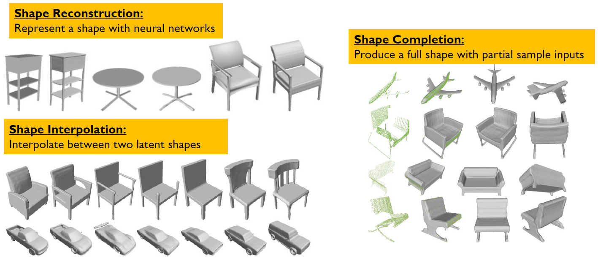

CS 8803 CGA - Neural SDF
Traditional SDF Representation
- The grid-based SDF representation takes a query point position as input and produces its SDF as output.
- Recall the three steps for grid-based query:
- identify the grid cell;
- calculate the fractions within the cell;
- calculate the interpolated SDF value from the grid nodes.
Neural SDF Representation
The neural network takes a query point position as input and produces its SDF as output. We can think of the neural network as a black-box function that replaces the grid
Neural Feilds
- A neural field is a function represented by a neural network that maps continuous coordinates to physical quantities, signals, or other desired outputs.
- It is also known as a coordinate-based neural network, implicit neural representation (INR), or neural implicit function
- Mathematically a neural field is a function of the form: .
- The function f is learned via a neural network. f is a function parameterized by , which represents the trainable weights of the neural network.
- p is the input coordinate, which lies in a d-dimensional space. This means that the input to the neural field is a point in a continuous space.
- The function maps this input coordinate to an n-dimensional output. The output can represent different physical quantities, such as:
- A scalar value (e.g., signed distance function, temperature, density)
- A vector field (e.g., velocity in fluid dynamics)
- A color value (e.g., in neural radiance fields for rendering)
Why Neural Fields?
As compared with the traditional field representation such as a grid, neural representations manifest the following merits:
-
Memory efficient
-
Domain agnostic
-
Inherently differentiable
Memory Efficiency: Grid v.s. NN
- Grid: The accuracy of an SDF discretized on a grid depends on its grid resolution: the denser the grid (i.e., the smaller the grid cell size), the more accurate the SDF.
- This is similar to a triangle mesh: the more triangles it has (i.e., the smaller each triangle is), the more accurately it represents a shape.
- Neural Network: Unlike a grid-based SDF, a neural network represents the SDF function continuously, requiring significantly less memory while maintaining high accuracy.
- Increasing the capacity of a neural network (i.e., number of weights and layers) can improve SDF accuracy, but it remains far more memory-efficient than storing explicit grid-based or mesh-based representations.

Domain Agnosticism (不可知论): Grid v.s. NN
- Grid: A grid-based SDF is domain-specific, as its resolution and memory requirements depend on the spatial discretization of a fixed domain, making it inflexible for handling shapes of varying scales or unbounded spaces.
- Neural Network: In contrast, a neural network-based SDF is domain-agnostic, as it learns a continuous function independent of a fixed grid, enabling flexible representation across different scales and even generalization beyond the training domain.

Differentiability
- Grid: A grid-based SDF is only differentiable at discrete points and requires numerical approximations (e.g., finite differences) to compute gradients, which can introduce errors and discontinuities.
- Neural Network: A neural network-based SDF is inherently differentiable, as its output is a continuous function of its input, allowing for exact analytical gradients that enable efficient optimization and gradient-based rendering techniques.

Neural Networks Foundation
Architecture
- Each node (neuron) in a layer receives inputs, applies a weighted sum followed by an activation function, and produces an output.
- Each edge has an associated weight that determines the strength of the connection between two nodes.
Loss Function
- A loss function measures the difference between predicted and true outputs.
- Typically, a loss function can be calculated as the Mean Squared Error (MSE) of all the data samples:
Forward and backward computation
- Forward: We know the parameters f and input X and want to calculate the output W. Given a network architecture and parameters, calculate the prediction based on the input.
- Backward: We know a set of input and output (X,W) and calculate parameters f. Given a network architecture and training data set (input->output), calculate the network parameters.
Chain Rule
Neural Networks for SDF
Neural SDF
-
We describe it as the zero iso-surface decision boundaries of a feed-forward network trained to represent the SDF: .
- Feed-forward network means that information flows in one direction only - forward - from the input nodes, through hidden layers (if any), and to the output nodes. In this case, it takes a 3D point p as input and outputs a scalar value s. The network is specifically trained so that when the output is 0 (), it defines an implicit surface - meaning it marks the boundary of the shape being represented.
-
The underlying surface is implicitly represented by the zero isosurface: .
-
This implicit surface can be viewed by Ray Casting or Marching Cube.
Key Idea
- The key idea is to directly regress the continuous SDF from point samples using deep neural networks.
- This representation can be intuitively understood as a learned binary classifier, where the decision boundary corresponds to the surface of the shape itself.

Training Data Format
Given a target shape, we prepare a set of pairs X composed of 3D point samples and their SDF values:
Training Data Preparation
- A complete 3D shape mesh (P) is used as input.
- 500,000 spatial points (x) are sampled around the mesh.
- We sample more aggressively near the surface of the object as we want to capture a more detailed SDF near the surface.
- To compute the SDF value of each sample point, we find the closest point on the mesh surface (denoted as P) to the sampled point x. Computes the SDF value as the distance between x and its closest point P.
Loss Function

Network Architecture
- A feed-forward network composed of eight fully connected layers, each of them applied with dropouts.
- All internal layers are 512-dimensional and have ReLU activation.


Shape Latent Space
Latent Space Representation for Many Shapes
- Motivation: We want to create a neural network model that can represent many shapes by discovering their common properties and embed them all in a low dimensional latent space.
- Key idea: We can introduce a latent vector z as a second input to the network, serving as the encoding of the desired shape.

Loss Function for Many Shapes

Deep SDF Applications

CS 8803 CGA - Neural SDF
http://example.com/2025/02/02/CS8803-CGA-L06/